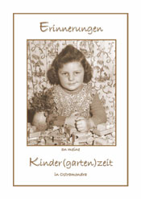
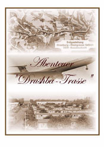

|
|
|
 Titelblatt  Titelblatt
|
Das Leben
in seiner Tiefe gesehen,
Anlässlich des 65-jährigen Bestehens, im Juli 2004, des Kindergartens in Ostramondra - in den ich selber vor langer Zeit gegangen bin - verfasste ich eine kleine Sammlung von Erlebnissen und vermachte sie dem Kindergarten für sein "Museum". (auf Anfrage pdf-Dokuments 1,6 MB)
Dieses sehr persönlich gehaltene Buch verdankt sein Zustandekommen einem österreichischen Mail-Freund, dessen Neugier und Unwissenheit und dessen Interesse für das persönliche Erleben in punkto DDR-Zeit und Drushba-Trasse mich nach so langer Zeit angeregt hat, dieses bereits ad acta gelegte Projekt doch noch zu verwirklichen. [wie die meisten "Memoiren" von noch lebenden Personen - außer wenn es sich dabei um Promis handelt - sind auch diese über den persönlichen Bekanntenkreis hinaus noch nicht zugänglich ;-) ]
|